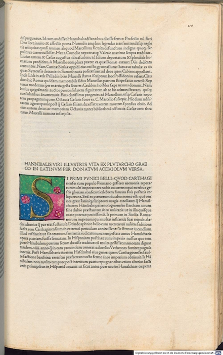
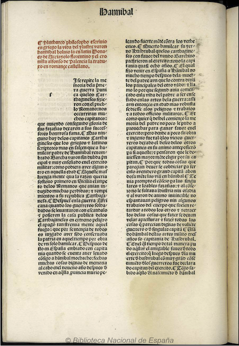

The manuscript sources are being pulled from https://github.com/susannalles/Vitae, and published in https://github.com/susannalles/susannalles.github.io/tree/master/Vitae
We transform the transcription in XML-TEI, into markdown files. Afterwards, the site is build dynamically using Markdown, YAML, HTML Templates and CSS.
Vitae Hannibalis - Vita de Scipión
 